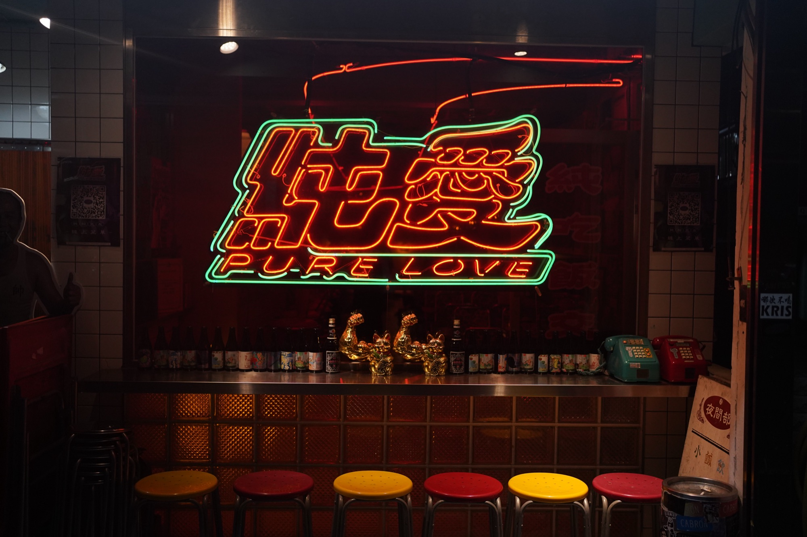
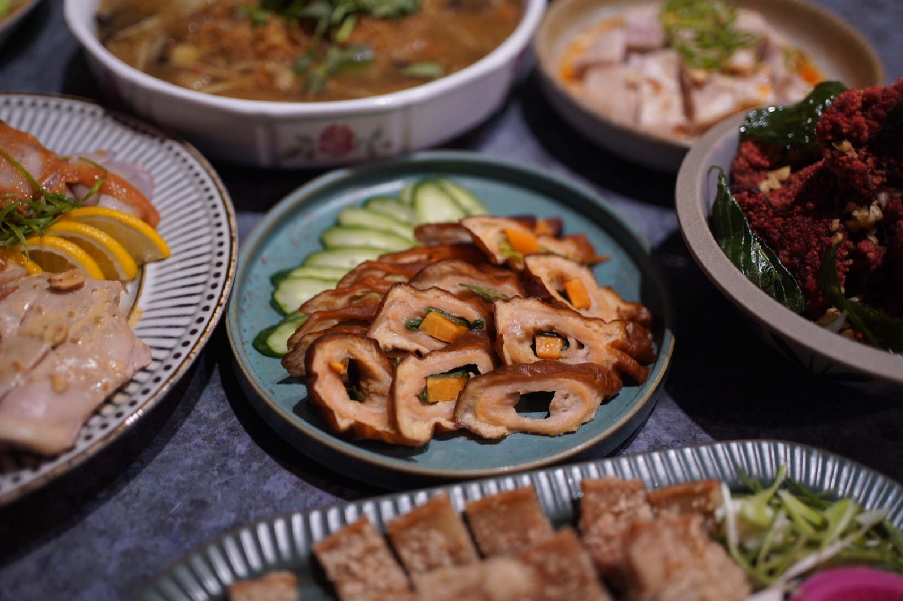
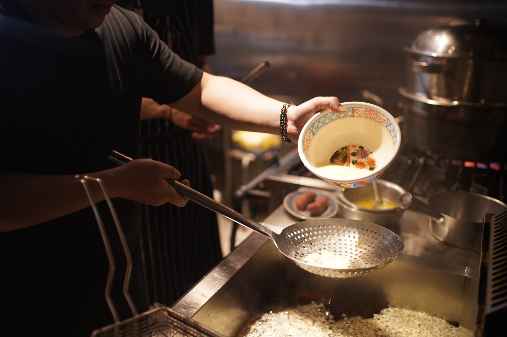
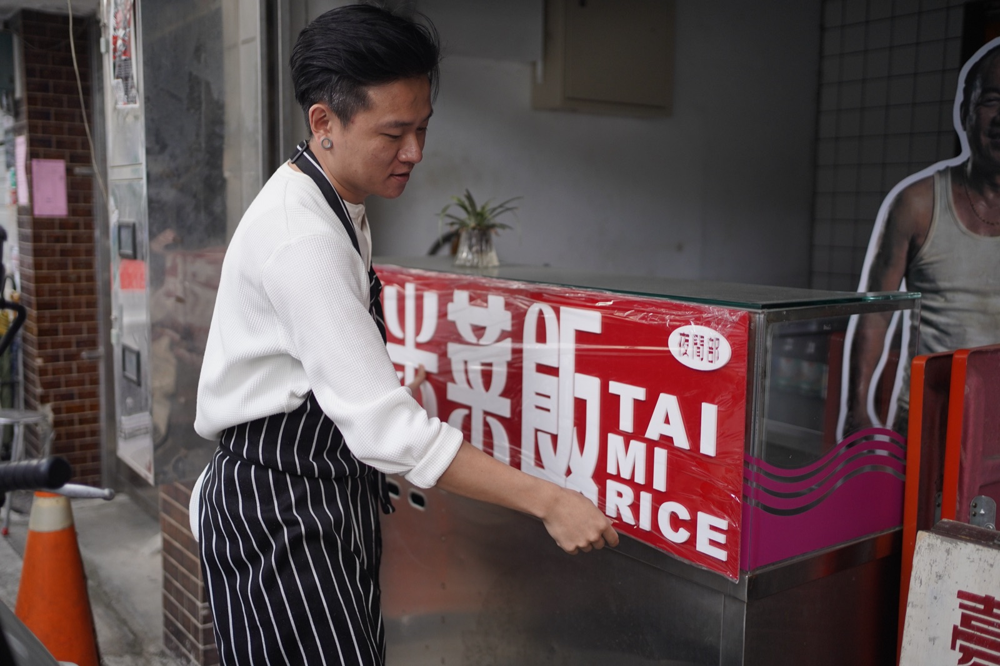

傑弗德把新三色場域的歷史轉化成台菜、飯桌菜與酒家菜體驗，讓不同世代都能走進品牌文化。

餐飲內容與場域文化的關係不夠完整，品牌語氣及菜單架構也較集中於年輕客群，尚未把台菜、辦桌菜、酒家菜與地方歷史整理成容易理解的體驗。
導入酒家菜、辦桌菜與台菜元素，以新三色及相關地方文化為產品發展起點，並調整菜單架構與溝通語氣。
從一般餐酒館，轉化成以台菜、酒家菜及地方文化為核心的餐飲場域，文化成為能被實際吃到的體驗。
01 ／ 案例背景
純愛小吃部原本接近小吃台菜型餐酒館，品牌希望以新三色場域及相關地方文化為起點，建立更具深度的台菜體驗。此案目前仍持續服務中。
02
業主最早希望的是讓餐酒館看起來更有文化氛圍。但傑弗德進場後看見的問題更根本：原始餐飲內容與場域文化的關係不夠完整，品牌語氣及菜單架構也較集中於年輕客群，尚未把台菜、辦桌菜、酒家菜與地方歷史整理成容易理解的體驗。
03
真正有價值的不是把小吃做得更精緻，而是讓消費者能從菜單、器皿、服務與用餐情境進入文化，而不是只看到復古裝飾——這決定了後續不只是換裝潢，而是重新梳理菜單與菜色來源。
04
為什麼：地方文化的深度，需要透過具體的菜色類型呈現，而非只靠陳設。
影響：菜單開始承載可辨識的文化脈絡，而不只是小吃拼盤。
為什麼：場域本身的歷史，是品牌區別於一般餐酒館的核心資產。
影響：產品開發從地方歷史出發，而非套用流行風格。
為什麼：原本的語氣及架構較集中於年輕客群，理解門檻偏高。
影響：降低理解門檻，讓不同世代都能讀懂菜單在說什麼。
為什麼：只鎖定年輕客群，會讓文化內容失去更廣的對話對象。
影響：品牌語言同時向不同世代開放，而非只服務單一族群。
為什麼：文化轉譯不是一次性的裝修工程，需要隨營運狀況調整。
影響：菜色及服務隨實際營運持續更新，此案目前仍持續服務中。
05
06
釐清新三色場域的地方文化脈絡與現有菜單的落差。
導入酒家菜、辦桌菜與台菜元素，重新設計菜單架構。
調整品牌語氣與服務細節，降低不同世代的理解門檻。
陪品牌完成新菜單與體驗的實際上線。
此案目前仍持續服務中，依實際營運更新菜色與內容。
案例影像



07 ／ 成果
純愛小吃部逐步從一般餐酒館，轉化成以台菜、酒家菜及地方文化為核心的餐飲場域；文化不只是視覺背景，而成為消費者能實際吃到及感受到的體驗。
以上為質性觀察與階段性成果說明，實際執行內容依合約範圍為準，不代表對特定營業額、獲利或回本時間的保證。
如果你正在準備開店、轉型，或發現原本有效的方法逐漸失去作用，我們可以先從釐清問題開始。